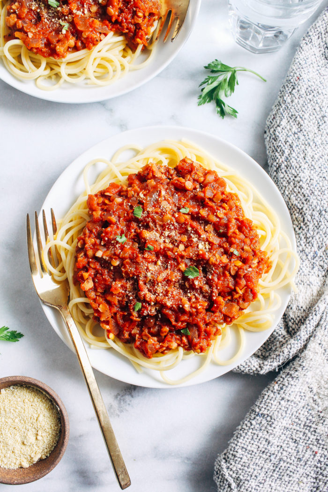

<!DOCTYPE html>
<html lang="en"></html>
<head>
        <meta charset="utf-8">
        <meta http-equiv="X-UA-Compatible" content="IE=edge">
        <meta name="viewport" content="width=device-width, initial-scale=1.0">
        <title>Lentil Bolognese Recipe</title>
</head>
    <h1>Lentil Bolognese</h1>
<body bgcolor="tan">
    
    
    <p>
     <h2><em>This vegan lentil bolognese is comforting, meaty, hearty, filling and nutritious.</em></h2>
     <h2>Ingredients</h2>
     <ul>
        <li>1 ½ tablespoons olive oil</li>
        <li>1 large onion, diced</li>
        <li>4 garlic cloves, minced</li>
        <li>1 teaspoon dried oregano</li>
        <li>1 teaspoon dried thyme (or use more oregano)</li>
        <li>1 ½ teaspoons kosher salt, plus more to taste</li>
        <li>Freshly ground black pepper to taste</li>
        <li>1 (5.3-ounce) (150g) tube of tomato paste</li>
        <li>3 cups (720 mL) vegetable broth</li>
        <li>1 cup (185g) red lentils</li>
        <li>¼ cup (32g) walnuts (or pecans), crushed finely</li>
        <li>1 (14.5-ounce/410g) can of crushed tomatoes or whole peeled tomatoes, crushed by hand.</li>
        <li>12-16 ounces (340-454g) long, wide pasta. </li>
        <li>1 tablespoon high-quality balsamic vinegar</li>
        <li>Flat-leaf Italian parsley or fresh basil, chopped or slivered</li>

</ul>

<h2>Steps</h2>
<ol>
    <li>Soak the 1 cup of lentils in water for 30 minutes, or up to 60 minutes.</li>
        <br>
    <li>Heat a 12-inch deep sauté pan or Dutch oven on medium-high heat. Add the olive oil, and
        once it’s shimmering, add the onions and season with a pinch of salt. Stir occasionally and
        cook the onions until light brown about 5 minutes. Add a few spoons of water to deglaze the pan, 
        and stir.</li>
        <br>
    <li>Add the garlic, thyme, oregano, 1 1/2 teaspoons kosher salt, and pepper to taste. Stir
        frequently and cook for 60-90 seconds.</li>
        <br>
    <li>Stir in the tomato paste and cook for 2-3 minutes to caramelize, stirring very frequently,
        until it’s darker red in color.</li>
        <br>
    <li>Pour in the broth to deglaze the pan, Add the lentils and walnuts, and
        stir to incorporate. Heat until the mixture comes to a boil, then reduce the heat to medium-
        low to maintain a rapid simmer for 20 minutes, stirring occasionally.</li>
        <br>
    <li>Add the crushed tomatoes and simmer for another 15-20 minutes, or until the lentils are
        tender but still al dente, stirring occasionally to prevent burning and sticking.
        If using crushed tomatoes, you may need to add a little water or lower the heat as needed
        to prevent burning.</li>
        <br>
    <li>Meanwhile, bring a large pot of water to a boil and salt generously. Add the pasta and cook
        until just al dente.</li>
        <br>
    <li>salt and pepper to taste. Finish with the balsamic vinegar and stir to combine.</li>
        <br>
    <li>Add the hot cooked pasta to the bolognese and toss until well coated in the sauce.</li>
    

</ol>
    </p>
</body>
</html>